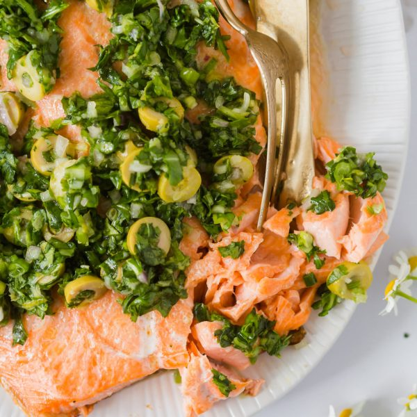

Steelhead

Description
This oven baked steelhead will be a quick and easy recipe to make any night of the week. In only 30 minutes you will a delicious and nutritious recipe packed with flavor, vitamins and healthy fats.
Ingredients
Trout
2 lbs Trout
1 tablespoon olive oil
1 teaspoon kosher salt
1 medium orange
2
Herb olive Salsa
2 tablespoons olive oil
2 tablespoons lemon juice
1 lemon zested
.5 cup green olives
1 small shallot
3 green onions
.5 cup cilantro
1 cup arugula
.75 teaspoon kosher salt
Instructions
1. Preheat the oven to 450 F. Line a rimmed baking sheet with parchment paper
2. Place the trout skin side down on a parchment-lined baking sheet. Pat dry on both sides first. Brush fish with olive oil. Sprinkle with salt. Add sliced orange.
3. Bake for 12-15 minutes, depending on how thick the fish is. The best way to check for doneness is to use a fork to gently prick the fish, and if it flakes easily its ready.
4. In a bowl add the olive oil, lemon juice, lemon zest, olives, chopped shallot, chopped green onions, chopped cilantro and chopped arugula. Mix to combine. Salt to taste.
5. Once the trout is done cooking, add to a serving platter, squeeze the oranges a bit and remove them from the trout. Top with Herb Olive Salsa and enjoy.